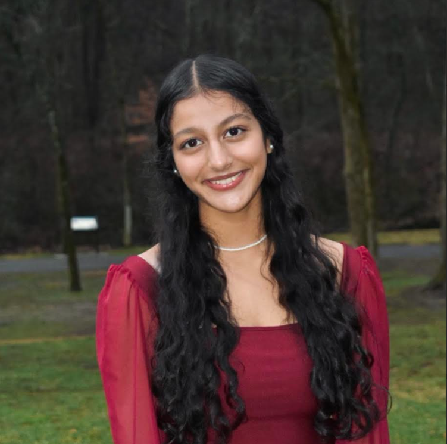

dear diary: it's anjali!
diary unlocked! 🗝️ this is my space to share who i am, what i love, and the things that make up my world. so glad you're here.
✨ get to know me
hey! i'm a rising sophomore in highschool who just got into coding! i have some experience with SQLite and creating data visualizations, but i am trying to learn HTML and CSS. i made this lil site as my first entry for the athena award in hackclub — just for fun, for me, and maybe for you too!
📚 table of contents
- 🌷 about me
- 🎧 current favorites
- 🖼️ moodboard
- 📓 diary entries
- 📬 say hi!
🌷 about me
🌼 hi again! i'm anjali—a student who's figuring things out one step, one project, and one chai latte at a time. i love thoughtful conversations, classic romcoms, and learning how the world works (especially when it comes to people, communities, and big ideas).
🕰️most of my time goes to things that let me help or create—like tutoring younger students at kumon, or leading my school's speech & debate team. i've even had the chance to speak with tennessee legislators about what students care about most, which made me realize how much our voices matter.
🧠lately, i've been exploring things like finance, communication, and tech—just enough to know i want to keep learning. this little site is part of my journey through the hackclub athena award. it's something i made for myself, but i hope you enjoy it, too.
☕when i'm not doing any of that, though, you'll probably find me hanging out with my friends, rewatching “10 things i hate about you,” or perfecting my go-to latte order.
🎧 current favorites
-
 song on repeat: “calla” by wave to earth 🎶
song on repeat: “calla” by wave to earth 🎶
-
 book i'm reading: “Brain on Fire: My Month of Madness” 📖
book i'm reading: “Brain on Fire: My Month of Madness” 📖
-
 movie night pick: “10 things i hate about you” 🎥
movie night pick: “10 things i hate about you” 🎥
-
 cafe order: iced chai latte w/ sweet cream cold foam, vanilla syrup, and oat milk 🧋
cafe order: iced chai latte w/ sweet cream cold foam, vanilla syrup, and oat milk 🧋
-
 self-care lately: journaling + long walks 🌿
self-care lately: journaling + long walks 🌿